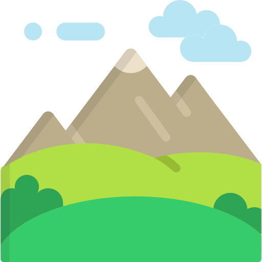
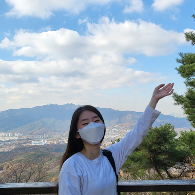
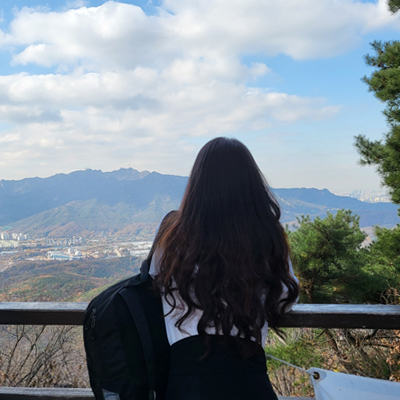
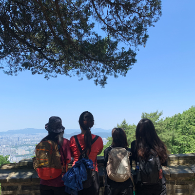
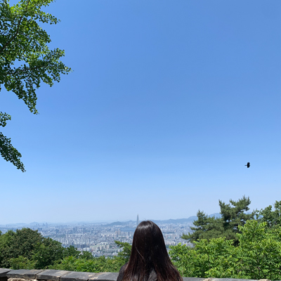

Climbing
#2시간넘으면 안되는
#등린이



BOWLING
CLIMBING
저는 __________을 시작했습니다.💖
등 산
혼자서 등산이 어려운 초보등산러는 친구들과 함께 등산을 하기로하고, 작년 11월 옥녀봉으로 등산에 입문하기 시작했습니다.
그 후 서로 다른 일정으로 등산은 없던일로 되어갈뻔했지만 더워지기전에 다시 등산 약속을 잡게되어 6월 22년의 첫 등산을 갔다왔습니다.😃
(이게 또 올해의 마지막은 아니겠죠?...)
21년 11월 옥녀봉 ›


‹ 옥녀봉은 375m로 초보등산러에게 추천!👍 소요시간 약 1시간
22년 6월 남한산성 ›
제2코스 → 제1코스


제2코스 → 제1코스
‹ 제1코스를 타려고했지만 초행길로 제2코스에서 시작!
약 2.4km 최단거리 완주
약 2.4km 최단거리 완주